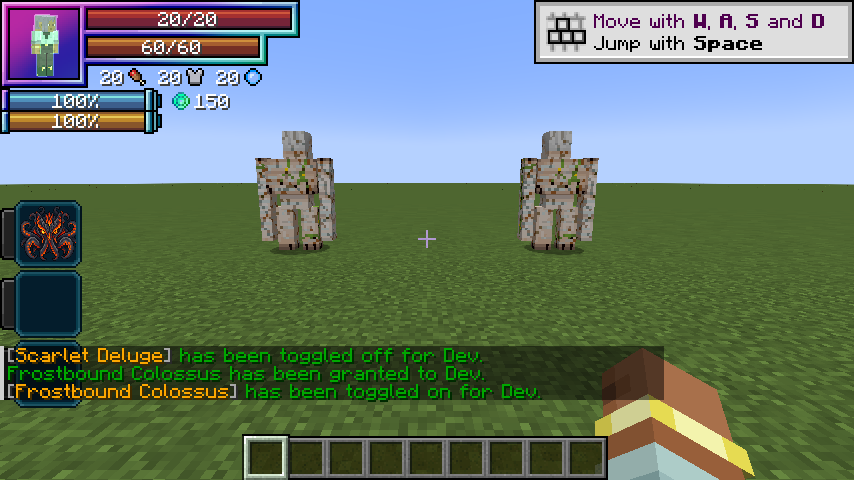

This page explains Tensura Myths combat mechanics, including native barriers, skill toggles, damage modifiers, and aura consumption.
Contents
Damage types
The ability index and damage reference distinguish every direct elemental source, native status and non-damaging utility. Vritra and Thoth use multiple elements within one skill; each strike keeps its own native damage source. Reflection preserves the projectile’s own type. Healing, gates, resource conversion and barriers do not invent attack damage.
Damage and mastery
All eight Uniques, the combination Ultimates and the three Godly skills use 1 + 0.5 × mastery fraction. Mastery fractions are clamped to 0–1, giving a maximum of 1.5× before native modifiers. Each new kit has its own raw damage values; there is no shared Ultimate 3× multiplier.
EP never multiplies damage. It is a fixed progression requirement. Native elemental boosts, skill authority, barriers, resistance/nullification, hit immunity and server rules still determine actual health loss. Overlapping warnings do not reset vanilla/native hit immunity to force multiple full hits.
Owning any Godly skill grants three shared classification passives, independently of toggles and upkeep. Divine Authority adds 35% damage against non-Godly owners while preserving the original attack type. Absolute Penetration bypasses native resistance/nullification protection only for damage attributed to that owner; nearby allies and environmental damage receive no benefit. Interference Immunity rejects non-Godly-origin Magic Interference, using the originating skill rather than the caster’s tier. These traits never stack between Godly skills. Aion retains its separate barrier/slow toggle, Thoth retains its elemental boosts and native magic-efficiency toggle, and Lugh retains its attack speed/movement/mastery toggle.
Elemental bonus sources
For each native elemental boost attribute, only the strongest positive non-Godly modifier applies. Compare each source’s actual effect against the current innate base, including flat, base-multiplier and total-multiplier operations. This covers native skills, Myths skills, equipment and other attribute sources. Lower bonuses remain installed and become effective automatically when a stronger source ends. Innate base values and negative modifiers remain intact.
Thoth’s Godly +75% elemental bonus applies separately. For example, +50% Rune Smith, +50% Furnace Mantle and +100% Vritra provide 2×, rather than multiplying together. Adding Thoth gives 2 × 1.75 = 3.5× before penalties. This policy affects elemental boost attributes only; it does not limit healing, mastery, attack speed or the shared Godly damage bonus. Native damage paths that do not use these attributes retain their own rules.
Living Grove also spends aura for each recipient’s actual HP/SHP recovery, in addition to its placement payment. See Verdant Keeper for mastery rates, refunds and partial funding.
World effects
Oil pools occupy finite world locations. Drenched is a timed water mark that supports the water/lightning interactions described on the skill pages.
Toggleable passives
Unique skills have two active modes, combination Ultimates three, and Godly skills four, with a separate native skill toggle in Tensura’s Ability Selection.
| Skill | Upkeep per second | Native multilayer capacity |
|---|---|---|
| Storm Crown | 25 aura | — |
| Scarlet Deluge | 30 aura | 100 |
| Black Flame | 35 aura | — |
| Frostbound Colossus | 40 aura | 150 |
| Threadweaver | 25 aura | — |
| Rune Smith | 30 aura | — |
| Verdant Keeper | 35 aura | — |
| Mirrorbound | 25 aura | — |
| Vritra | 120 aura | — |
| Demeter | 110 aura | — |
| Janus | 110 aura | — |
| Aion | 180 magicules | 1,200 |
| Thoth | 180 magicules | — |
| Lugh | 240 magicules | — |
| Anansi | 100 aura | — |
| Aegir | 110 aura | — |
The first second is paid when enabling; upkeep is charged once every twenty game ticks while active. Passives stay on until disabled, unfunded or blocked by activation requirements. They do not expire after fifteen or thirty seconds. Attribute contributions use stable IDs, so refreshes cannot accumulate duplicate bonuses. Turning off or forgetting the skill removes its modifiers. Saved native toggle state is restored on login.
Native barriers
Water Veil and Colossus Carapace contribute to Tensura’s PHYSICAL_BARRIER and MAGIC_BARRIER attributes and arm MULTILAYER_BARRIER, which is the attribute read by its shield HUD counter. Tensura handles their interaction with damage and renders its native barrier layer around the character. Wild Hunt adds no separate absorption-heart pool. Other skills’ barrier contributions remain separate.
Aion also uses a recovering personal multilayer barrier. Demeter uses one-use Perennial Seeds, which heal wounded living allies for 40% maximum HP/SHP instead of lending a barrier. Its orchard and empowered harvest provide additional allied recovery. Mirrorbound and Aegir redirect projectiles; Janus uses positioning; Anansi creates runic threads; Thoth and Lugh focus on spellcraft and reconstructed techniques. None of those toggles grants a general-purpose shield.
The displayed value is native per-hit blocking capacity. Tensura charges magicules for blocked damage. Overflow, inadequate magicules and native power interactions can break the shield. A broken multilayer barrier automatically rearms at the first paid upkeep after ten seconds without a hit (normally 10–11 seconds). Hits, including fully blocked hits, restart recovery. Retoggling cannot skip this delay. The shield modifier is saved across relogs; turning off removes only this art’s contribution. Ensure Tensura’s Barrier HUD decoration is enabled if you have customized its HUD.
Water Veil retains water breathing and an attacker-targeted retaliation after actual health damage. Furnace Mantle retains fire protection while enabled; both utility effects stop immediately on toggle-off without leftover timed potions.
Aiming and movement
Railbolt begins with a block-clipped aimed hit, then ricochets from the latest victim. Thunder Step follows the full aim vector, including vertical pitch, and sweeps the whole caster bounding box. Collisions, build-height limits and the world border stop it. Railbolt bounces reach twelve blocks through walls from the most recent victim. Thunder Step reaches 16 blocks with a 4-second cooldown and preserves all three components of player momentum. Undertow is placed on the crosshair ray within 24 blocks, using the hit surface or bounded endpoint. Water waves sweep continuous segments so targets cannot hide between movement updates. Oil Lash selects a limited forward fan and creates synced tentacle geometry. Avalanche Crash is an aimed area impact; Glacial Prison targets one enemy. Winter Harvest warns fixed crystal blooms for 1.2 seconds; Parallax Snare warns a spatial convergence for 0.8 seconds.
Attacks respect teams, owned pets, creative/spectator immunity and PvP settings. They check line of sight except for Railbolt ricochets after the initial hit. Movement respects knockback resistance. Dimension changes invalidate anchored effects. Native status resistance and skill ranks can prevent Frost or Chill. No art destroys terrain or places permanent ice.
Aura regeneration
See Aura regeneration for the three race-granted Extra Skills, healing speed, aura costs, suppression and death-prevention limits. They never charge magicules. Default native EP gain stays split two thirds aura and one third magicules.
Visual effects
Each kit uses its own textured shapes and animation: branched lightning, caustic water, molten tentacles, veined ice, silk, rune circuits, botanical growth, faceted mirrors, storm clouds, crystal orchards, architectural gates and astronomical clockwork. See the visual gallery for examples and display behavior. Thoth retains its layered seals, hinged grimoires and chapter-colored spells.
Visual entities deal no damage by themselves, have no collision and expire automatically. Server skill logic owns targeting, resource use, damage and cooldowns. Long-lived fields retain their actual placement; moving wards and healing pulses follow their recipients. Native elemental particles, barrier rendering and animated magic circles remain supplied by Tensura at runtime.
No shader pack is required. Materials are batched per effect; curve detail decreases at distance. Minecraft’s Particles setting reduces decorative motes, foam and cloud sprites while preserving primary attack paths, warning footprints, crystal geometry and gate frames. Minimal particles does not disable skill visuals. Water Veil and Colossus Carapace remain free of constant custom effects.
Barrier HUD examples


The examples show the Unique passives enabled.

The native HUD shows 250 combined capacity with both Unique barrier passives enabled (100 Water Veil + 150 Colossus Carapace); no custom bubble/frost orbit is emitted.
Hunter vitality
Race HP bonuses are +100 / +500 / +1,000; native SHP bonuses are +400 / +3,200 / +6,600. These replace earlier hunter-stage bonuses. See Human evolution.
Ultimate interactions and technique reconstruction
All five combination Ultimates' damaging arts carry native level-1 resistance bypass, preserving the native partial-penetration/nullification fallback rules. Native attribute resistance, barriers, authority and hit immunity still apply. Godly ownership provides stronger resistance/nullification bypass for the owner's damage only.
Vritra's storm creates a second Plasma Bore firing origin and is consumed by Cataclysm Front. Janus can open a second Parallax Snare at its opposite gate. Anansi's Checkmate consumes a fixed two-anchor corridor or three-anchor triangle. Aegir's Mirrorsea adds two converging Harpoon origins with a shared victim set, then can be consumed for an empowered expanding wave. Demeter consumes its orchard for a stronger harvest and allied recovery.
Lugh stores three bounded techniques and reconstructs their form and normalised damage type. It never executes another addon's skill code. Countermand seals only a recent non-Godly source ability for six seconds without deleting skill state. Grand Synthesis snapshots the archive and strikes at 1.0, 1.8 and 2.6 seconds.